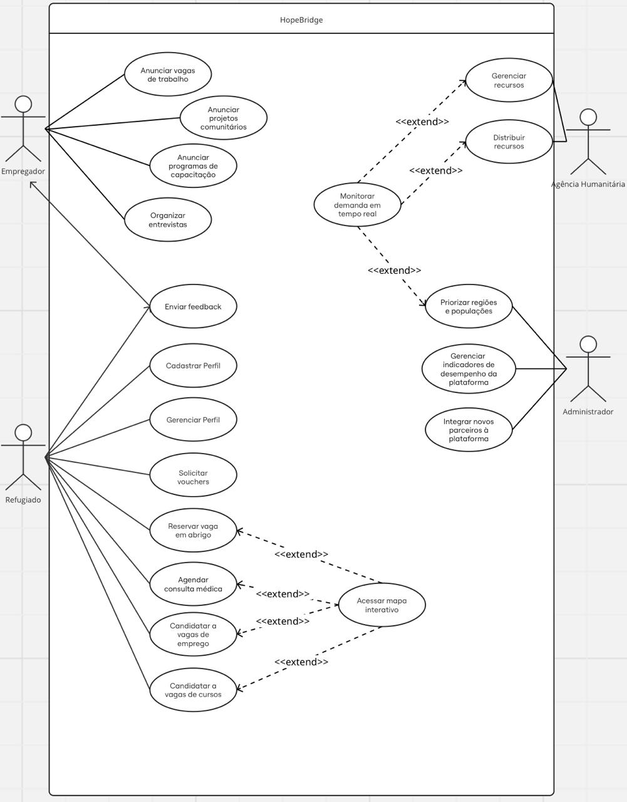

üè• HopeBridge
üåç Contexto
Após anos de conflitos, o cessar-fogo foi estabelecido, mas as condições de vida dos refugiados palestinos permanecem desafiadoras. Muitos perderam suas casas, não têm acesso a recursos básicos e enfrentam dificuldades para se reintegrar economicamente e socialmente. A HopeBridge foi criada para conectar essas pessoas a serviços essenciais, oportunidades de trabalho e redes de apoio, promovendo a reconstrução de vidas e comunidades de forma integrada e sustentável.
A plataforma é projetada para funcionar em dispositivos simples, com interface intuitiva e suporte para múltiplos idiomas, incluindo árabe e inglês. Ela também utiliza sistemas offline para comunidades sem acesso estável à internet.
üßë‚Äçüè´ Casos de Uso

üìò Identifica√ß√£o dos Atores
-
Refugiados
Usuários finais da plataforma. São pessoas em situação de refúgio que utilizarão o sistema para acessar serviços essenciais, oportunidades de emprego e apoio à reintegração social. -
Empregadores
Parceiros responsáveis por divulgar e acompanhar oportunidades de trabalho destinadas aos refugiados. -
Agências Humanitárias
Organizações parceiras que promovem campanhas e oferecem diversos serviços de assistência aos refugiados por meio da plataforma. -
Administradores
Organizações parceiras que promovem campanhas e oferecem diversos serviços de assistência aos refugiados por meio da plataforma.
üéØ Objetivos
ü뮂Äçüíª Objetivo Principal
Facilitar a reintegração social e econômica dos refugiados palestinos com dignidade e autonomia.
üîç Objetivos Espec√≠ficos
- Apoiar o acesso a serviços básicos (abrigo, alimentos, água, saúde)
- Promover a educação e capacitação
- Criar oportunidades econômicas
- Facilitar a gestão humanitária
- Incentivar a reconstrução comunitária
üì± Objetivos do Aplicativo
- Centralizar informações sobre serviços essenciais
- Facilitar a interação entre refugiados e provedores
- Gerar relatórios de impacto
- Oferecer funcionalidades offline
- Garantir inclusão digital com suporte multilíngue
- Integrar processos de alocação de recursos
- Conectar refugiados a empregos e capacitações
- Promover engajamento comunitário
üßæ Resultados Esperados
- Melhor acesso a serviços essenciais
- Reintegração social e econômica
- Reconstrução da infraestrutura comunitária
- Base de dados para políticas públicas e estratégias humanitárias
üß™ Exemplo Prático de Uso: Ahmad
- Ahmad, refugiado de 35 anos, registra sua família no HopeBridge.
- Solicita abrigo e assistência médica para sua filha.
- Sistema localiza opções e confirma agendamento.
- Ahmad participa de curso de qualificação em construção civil.
- Consegue vaga em projeto de reconstrução.
- Engaja-se em reuniões e ações comunitárias.
üí° Impacto da Experi√™ncia de Ahmad
- Obteve abrigo seguro e assistência médica para sua filha
- Ingressou em curso de qualificação
- Conseguiu emprego em projeto comunitário
- Fortaleceu laços sociais e contribuiu para a reconstrução
- Recuperou autonomia, dignidade e esperança
Especificações dos Casos de Uso:
Caso de Uso: Agendar Consulta Médica
Caso de Uso: Reservar Vaga em Abrigo
Caso de Uso: Anunciar Vaga de Trabalho
Caso de Uso: Gerenciar Recursos
Caso de Uso: Integrar Novos Parceiros à Plataforma
Caso de Uso: Cadastrar Perfil